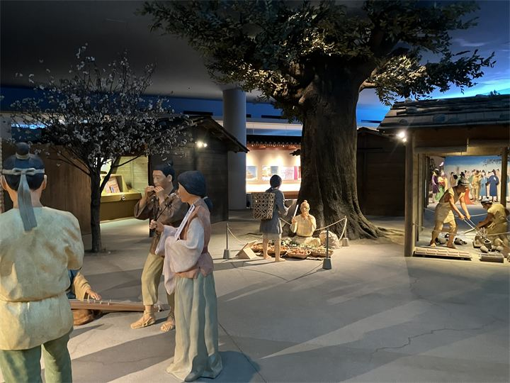
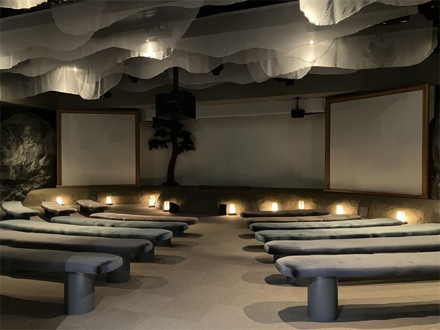

万葉集と古代文化の展示
万葉集や古代の暮らしについて、資料や映像を通して分かりやすく学べます。

奈良県立万葉文化館は、万葉集を中心に古代文化や飛鳥の歴史を学べる博物館です。 万葉の時代を紹介する展示や映像、体験型の展示を通して、飛鳥時代の文化に触れることができます。 明日香観光の拠点のひとつとして、歴史散策の途中にも立ち寄りやすい施設です。
| 営業時間 | 10:00〜17:30（入館は17:00まで） |
|---|---|
| 定休日 | 月曜日（月曜日が祝日の場合は翌平日）、年末年始、展示替期間 |
| 料金 | 無料（一部展示は有料） |
| 所要時間 | 60〜90分 |
| 駐車場 | 万葉文化館駐車場 普通車500円 |
| アクセス | 近鉄飛鳥駅から明日香周遊バス「万葉文化館西口」下車すぐ |
| 地図 | 地図はこちら |

万葉集や古代の暮らしについて、資料や映像を通して分かりやすく学べます。

展示だけでなく、映像や体験型の設備で飛鳥時代の文化を楽しめます。
奈良県立万葉文化館は、万葉集が成立した時代の文化や歴史を紹介するために整備された施設です。 飛鳥の地に残る歴史遺産と合わせて楽しめる、明日香観光を代表する文化施設のひとつです。